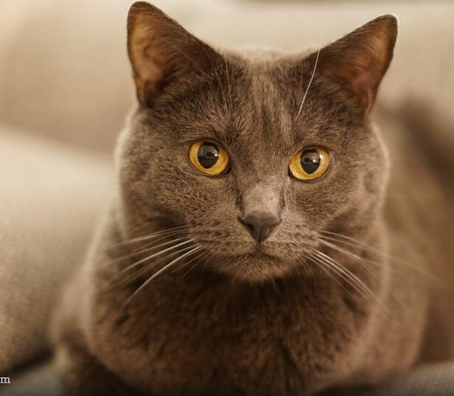

Хочу представить Вам породу моего любимца. Шартрез (картезианская) кошка.
Кошки - загадочные животные, которые многие века живут рядом с человеком. Кажется, что мы знаем о них все, однако нам до сих пор есть чему удивляться. Если кошка стоит около вас с поднятым трубой и чуть подрагивающим хвостом – это выражение ее любви к вам. От удовольствия кошки зачастую растопыривают пальцы, выпуская и втягивая когти. Рисунок кожи на носу у кошки по своей уникальности сравним с отпечатками пальцев. Кошки ненавидят запах цитрусовых. Это используется для создания средств, отбивающих охоту гадить в определенных местах или точить коготки. Кошки хорошо понимают ваше настроение и тон голоса, даже если при этом и не показывают вида. Чем больше вы разговариваете с кошкой, тем больше она разговаривает с вами. Кошки плохо различают мелкие детали, но довольно хорошо видят в темноте – им вполне хватает нескольких сотых от той освещенности, когда человеческий глаз уже перестает что-то различать во тьме. Усы помогают кошке не только определить, пролезет ли она в отверстие, но и ориентироваться в пространстве в целом и получать информацию о температуре, направлении ветра и других параметрах окружающей среды. Усы у кошки все время находятся в движении. Если кошка чем-то заинтересована – усы смотрят вперед, если усы смотрят назад – она чем-то напугана. Если кошка защищается – она прижимает уши к голове, а когда нападает – уши расправляет в стороны для большего устрашения. По некоторым данным мурчанье кошек может благоприятно сказываться на здоровье человека, а их биоэнергетика положительно влияет на работу сердечно-сосудистой системы. Кошки имеют паранормальные способности, предчувствуя беду до того, как она случится – они предчувствуют землетрясения, пожары, наводнения и другие стихийные бедствия. Если кошка шипит на человека, пришедшего к вам в дом, – человек настроен к вам недоброжелательно, если же ластится к нему – значит человек имеет добрые намерения. Если кошка ложится на вас или мнет своими лапами определенную часть тела, то там возможна какая-то развивающаяся болезнь, которую она чувствует и от которой хочет помочь вам избавиться. Вот такие удивительные животные эти кошки. Недаром иметь дома кошку всегда считалось добрым знаком. Так что если хотите жить долго и счастливо, то просто заведите себе кошку и удача вас не покинет.
Моего питомца зовут Барсик. Ему 7 лет. Порода его шартрез. Порода шартрез — приятные компаньоныю. Им свойственны короткие всплески игровой активности, и они чувствуют себя одинаково комфортно в одиночестве и в компании хозяев. Порода кошек шартрез — среднего размера. У её представителей сильная мускулатура, крепкий скелет и массивный вид. Самцы шартреза крупнее самок. У картезианской кошки характер покладистый и тихий. Они приятные компаньоны, преданные и любящие. Питомцы привязываются к каждому члену своей семьи. Пока французский шартрез занят игрой, ему практически не требуется внимание. Если кошка в настроении поиграть, она сама найдёт и принесёт владельцу игрушку. Картезианская кошка голубая также прекрасно играет сама с собой. Эти питомцы хорошо подходят одиноким людям. Им свойственны короткие всплески игровой активности, они чувствуют себя одинаково комфортно в одиночестве и в компании хозяев. Все это про моего Барсика. Скучать не даст, если чувствует в Вас грусть, в покое не оставит, пока Ваше настроение не изменится. Дружелюбен и одновременно самостоятелен. как говорится "ходит сам по себе", но от внимания Вашего никогда не откажется, если конечно Вы не мещаете ему спать.))) Имеет свои привычки: перед Вашим сном обязательная процедера - "почухай меня" - пока Вы его гладите, чешите за ушком, он мурлычет и кайфует , выделяя положительную вибрацию, которой не возможно не зарядиться. При возвращении домой, Барсик заранее знает о Вашем приходе и преданно ждет у входной двери, когда он Вас встретил, ложится на спину, вытягиается во весь рост и ждет, чтобы Вы погладили его пушистый животик. Милейшее создании. Ну а после обязательная трапеза кормления! Любимая игрушка - это трубочка для напитков, которую он как преданный питомиец приноит в зубах, чтобы Вы с ним поиграли. Люблю своего пушистого друга и желаю, чтобы у каждого был верный питомец, приносящий только радость!